About Me
I am an Electrical Engineering undergraduate student from Pulchowk Campus, Institute of Engineering, Tribhuvan University. I enjoy the problem-solving and actively fond of new emerging hardware technologies. I always strive to bring my 100% to the work I do. I have worked on the field of Power System, especially AI powererd Energy Management System (EMS) with Demand Side Management (DSM), Power Electronics, specifically Efficient Power Converter Topologies for Renewables and wide variety of applications. I have the extensive amount of research and hardware experience, which help me strengthen my experience in Power Electronics. I am passionate about Renewable Energy (Photovoltaics), Electrical and Electronics circuit design, Energy management, Power Converters and its Hardware Fabrication, Wide band-gap and Ultrawide band-gap based Converters.
Programming Languages: Python, C, C++, HTML/CSS, Latex
Softwares: MATLAB, KiCAD, LTSpice, AutoCAD, Overleaf, Fusion360
Download My CV
Publications
Articles
Phuyal, S., Shrestha, S., Sharma, S., Subedi, R., Khan, S.
International Conference on Artificial Intelligence of Things (ICAIoT)
Published in Springer Nature, CCIS, Volume 1930, 2023
Go to Paper
S. Sharma, P. Neupane, S. Shrestha, S. Phuyal, S. Satyal
Published in KEC Journal of Science and Engineering, 2024.
Go to Paper
B B Karki, S Sharma, P Neupane, S l Phuyal, S Shrestha, S Katuwal, S Satyal, M Loubani
Published in British Journal of Surgery, 2024
Go to Paper
B B Karki, S Sharma, P Neupane, S l Phuyal, S Shrestha, S Katuwal, S Satyal, M Loubani
Published in British Journal of Surgery, 2024
Go to Paper
Books
S Phuyal, S Shrestha, S Sharma
Publisher in Photocopy Sewa, 2023
Download Cover
Projects
- Designed and fabricated the hardware for the new topology and control strategy for the Transformer-less PV Inverter to reduce the leakage current flowing in between the grounds of PV and grid.
- Built an IoT based Home Energy Management System (HEMS) using ESP32 for predicting household energy demand and optimizing energy consumption with load scheduling and shifting.
- Awarded as a categorical winner of Demand Side Management (DSM) in Energy Hackathon 6.0 issued by LOCUS 2023
- Presented at the International Conference of Artificial Intelligence of Things (ICAIoT) held in March 2023, Chandigarh, Inida
View Certificate
- Successfully developed the standalone Automatic Progress Tracking (APTS) for LaApSi model. It was validated by various national and international surgeons presented in Laparoscopic Surgery Course, Nepal (RCS Edinburgh Endorsed) held in Dhulikhel and Manipal Hospital.
- Created a 4WD vehicle and steered it properly on a pretrained track using Computer Vision with CNN and LSTM
- Awarded as a runner up of the category Thematic Award in Locus 2023 Exhibition
Download Slides , View Certificate
- Successfully developed and fabricated the low cost Laparoscopic Appendicectomy simulation model for surgical trainees specially in low middle income countries (LMICs).
- Top 12 Finalist: Rising Star ICT Award, ICT Awards 2022
- Track Winner of Data Science and AI issued by KU Hackfest 2021
Experience
Surgical Simulation Research - IOE Pulchowk Campus
- Developed and fabricated the Automatic Progress Tracking (APTS) using Microcontroller and peripherals for Low Cost Laparoscopic Appendicectomy Simulation (LaApSi) Model for surgical trainees specially in low middle income countries (LMICs) using standalone microcontroller and peripherals.
- Participated in Laparoscopic Surgery Course, Nepal (RCS Edinburgh Endorsed) held Dhulikhel and Manipal Hospital.
- Validation of APTS for LaApSi model by various national and international surgeons presented in Laparoscopic Surgery Course, Nepal (RCS Edinburgh Endorsed) held Dhulikhel and Manipal Hospital.
Skills: Surgical Simulation, Injection Molding
Sep 2023 - Feb 2024, Lalitpur, Nepal
Organizer | Energy Hackathon 7.0
- Sucessfully organized and managed the largest week-long Energy Hackathon 7.0 in Nepal sponsored by GIZ Nepal
- Mentored over 20 undergraduate teams to generate creative and problem-solving ideas in the energy and power sector.
Nov 2023 - Jan 2024 | Lalitpur, Nepal
Resource Manager | Electrical Club, Pulchowk Campus, IOE
- Responsible for handling and maintenance of the resources needed for the club for conducting various workshops and internal events.
- Instructor for the first ever week long event on PCB Design and Fabrication.
- Tutor for the week long event on Home Electrification.
- Contributed to 3 projects, mentored 10+ hardware projects of participants at LOCUS 2023 Exhibition
- Organized a first ever podcast series, EC Talks: Engineering Unfiltered with Pulchowk Campus alumnis
Tools: OpenCV, MATLAB, Arduino, Power Electronics, Adobe Premiere Pro
May 2022 - Mar 2023 | Lalitpur, Nepal
Gallery
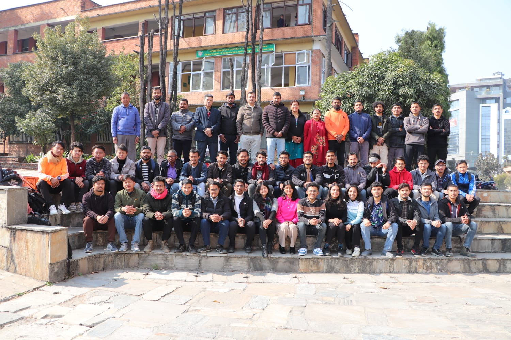
BEL2076 Batch Group Photo
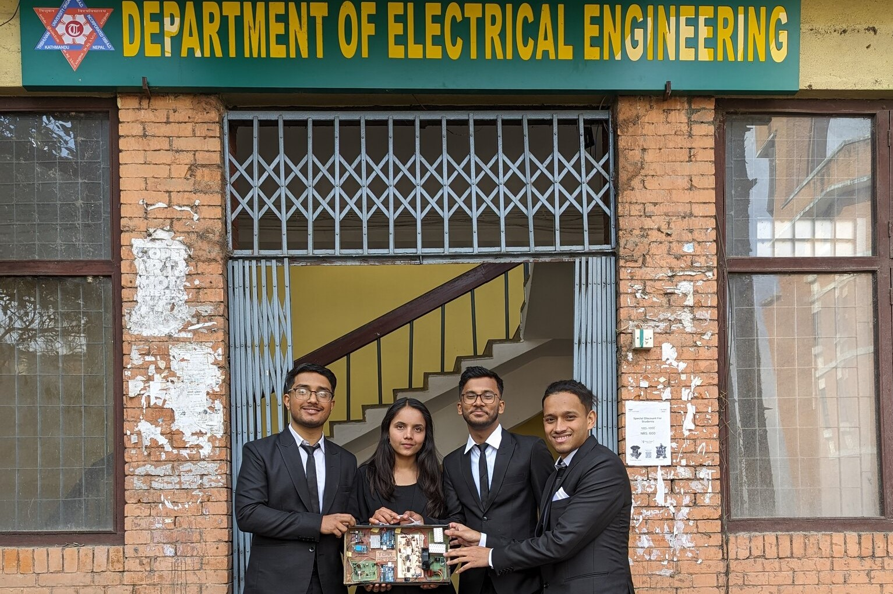
Final Year Project Group, Aztec
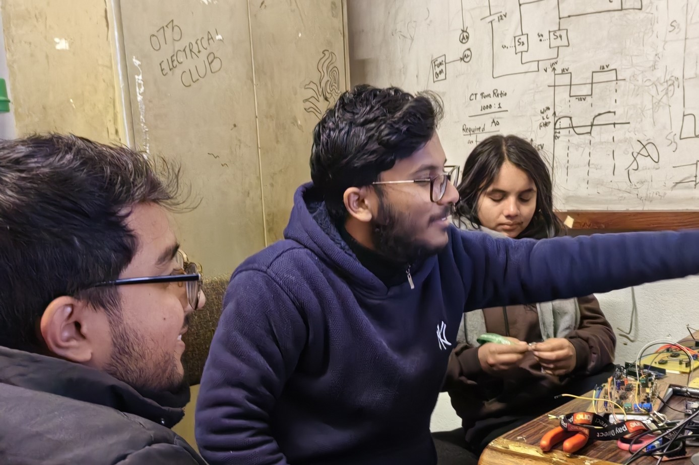
Working for the FYP at the Lab
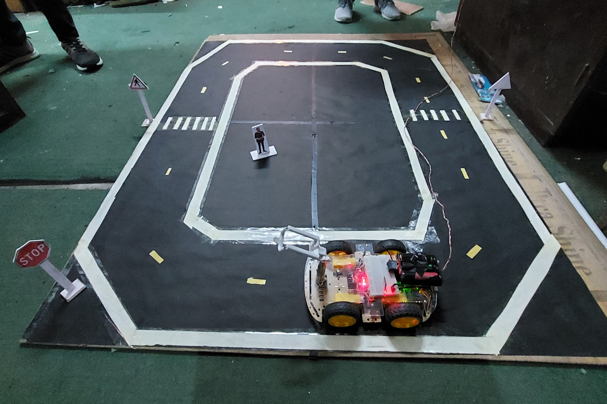
Making the Platform Ready for Autonomous Car to Train
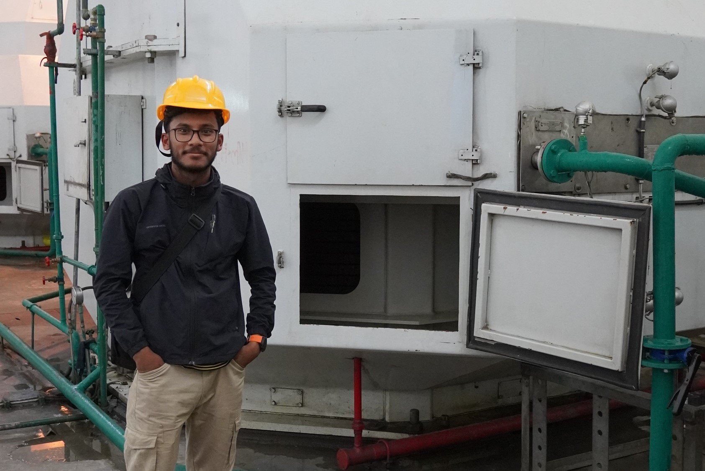
During Site Visit at ModiKhola Hydropower
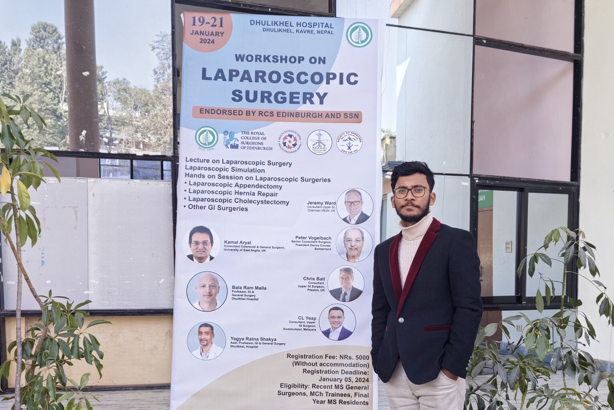
Attending the Laparoscopic Surgery Course, Nepal (RCS Edinburgh Endorsed)
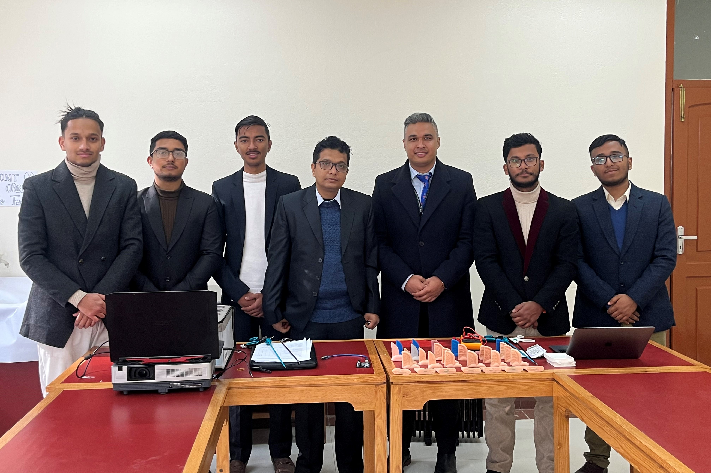
LaApSi Team at Dhulikhel Hospital for LaApSi APTS Validation
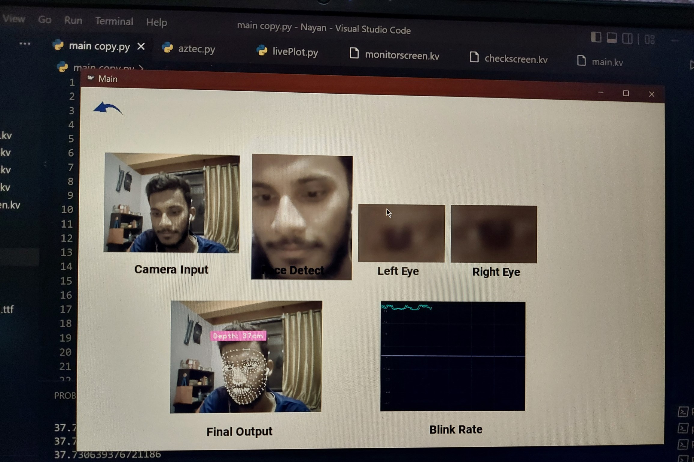
Product Demo of Nayan, an Eye Monitoring Software
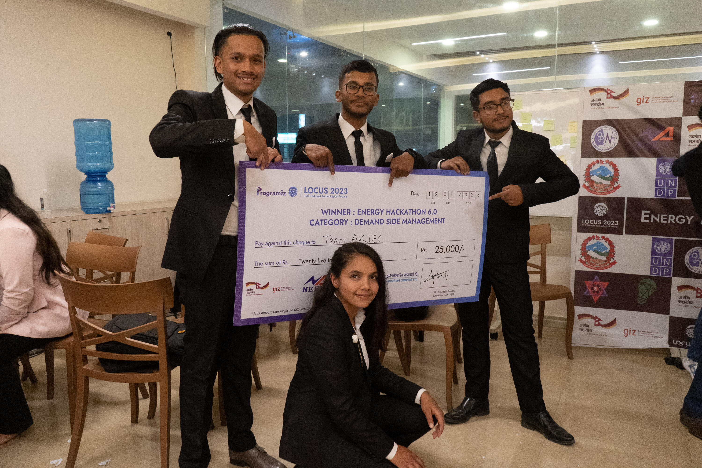
Winning Energy Hackathon 6.0
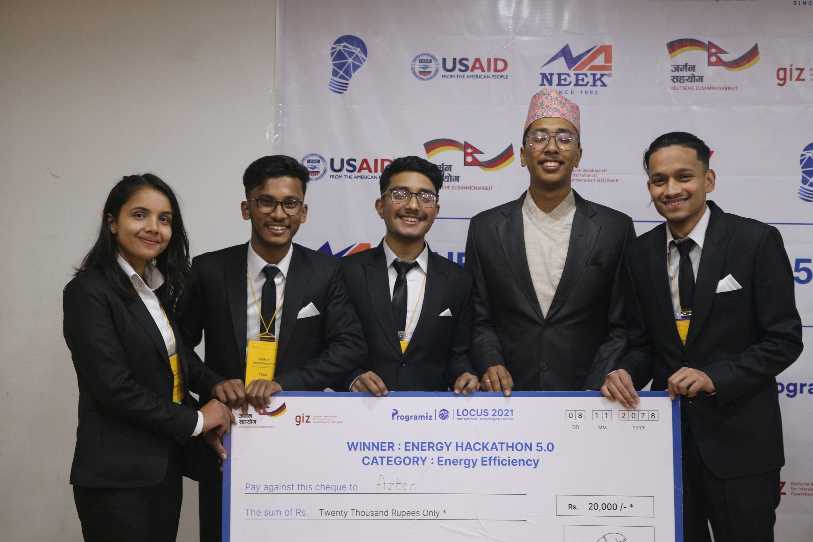
Winning Energy Hackathon 5.0
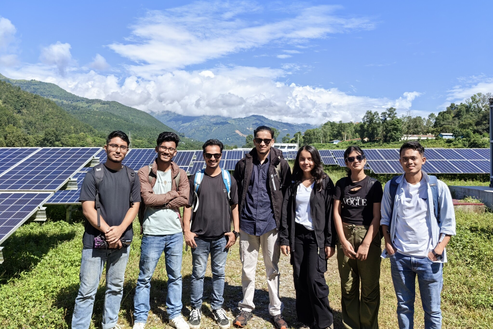
Group Site Visit at Nuwakot Solar Power Station 25MW
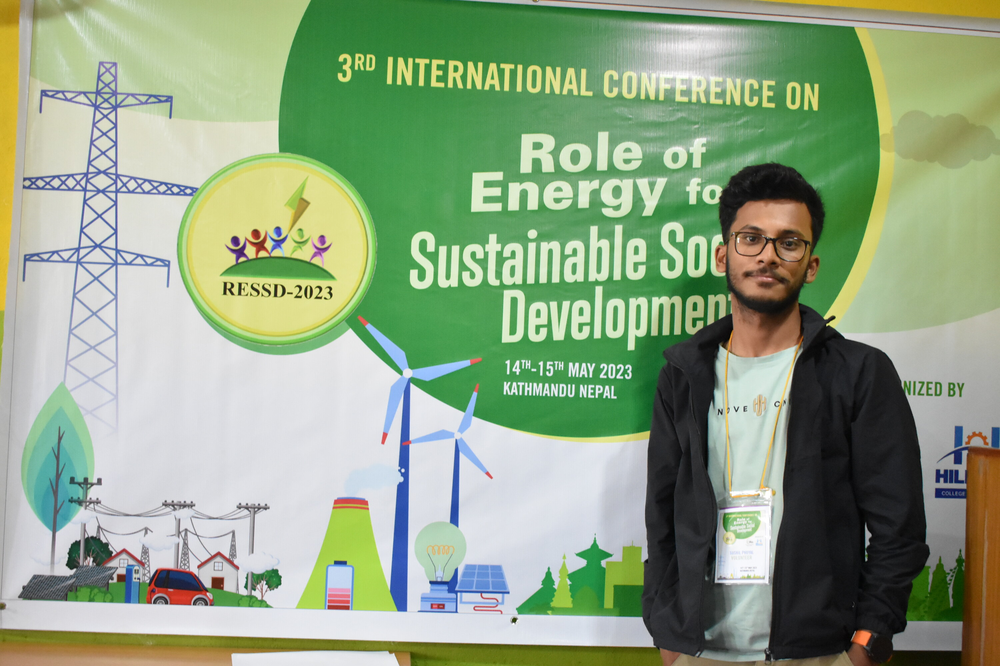
3rd International Conference on Role of Energy for Sustainable Social Development (RESSD)